Variations on a Theme
Warwick Brothers & Rutter can make “I already have that one” a dangerous thing to say. There is the familiar photograph, the familiar title and even the familiar number. Then a second look reveals a capital letter where there used to be lower case, a photographer’s name in a different corner, or a Garden of the Gulf label that has appeared—or vanished.
One view can become a little collection of its own. The pleasure lies in putting the copies together and watching the changes accumulate: wording, punctuation, type, position, credits and the letters beside the number. Four Island views show just how much variety Warwick could fit around the same photograph.
The large numbers in the headings are Warwick’s printed numbers. Linked four-digit numbers identify individual postcards in this collection. Beneath each pair, the enlarged margins make the small differences easier to see; each image opens the complete card.
2669 · Striking Board Ice · 1778 · North Cape · 1800 · A Shady Nook · 1853 · Gathering Shells
2669: Striking Board Ice
The men hauling an iceboat up onto the ice make an unforgettable picture. The same line of bodies, the same boat and the same pointing arm recur on Warwick’s no. 2669. Once the eye reaches the margin, the cards begin to part company.
On one copy, “STRIKING BOARD ICE” occupies the left while a sentence in mixed case explains the crossing at the right. Another runs everything together in a single line of capitals, inserting a comma after “BOARD”. A third splits the line again, keeps the capitals, moves the comma after “CAPES” and shortens the wording. Even the sentence changes.


The printed margins
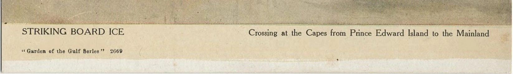
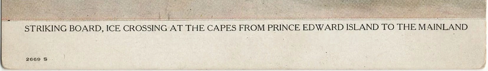
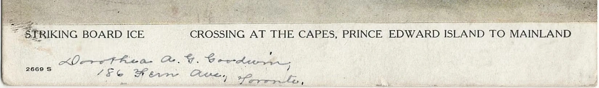
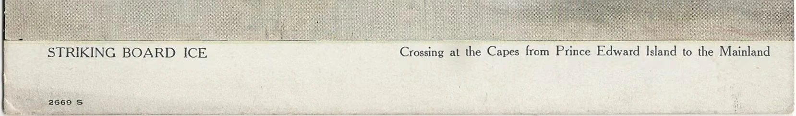
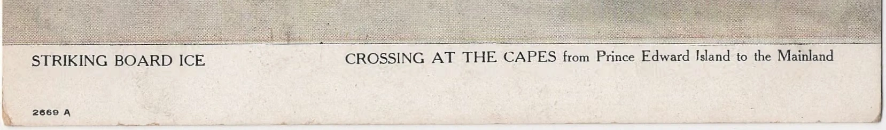
The three middle examples all carry 2669 S. That is the delightful trap: matching the photograph, number and letter still leaves three visibly different settings of the caption. The A version adds another treatment, changing case halfway through its explanation. And the unsuffixed card has the Garden of the Gulf label, absent from the other four margins shown here.
1778: North Cape
At North Cape, a wave breaks beneath a rock arch. W. Cumming’s photograph supplies another fixed point around which Warwick could rearrange the furniture. The location can end at “PRINCE EDWARD ISLAND” or continue to “CANADA”. The photographer can be named at the lower left, or that space can carry Warwick Brothers & Rutter’s own imprint.
Then there is the series name. It can have “The” or dispense with it; appear in quotation marks or stand without them; finish with a period or leave the word “Series” alone. These are tiny differences until two copies are placed together. After that, they are hard to stop seeing.


The printed margins
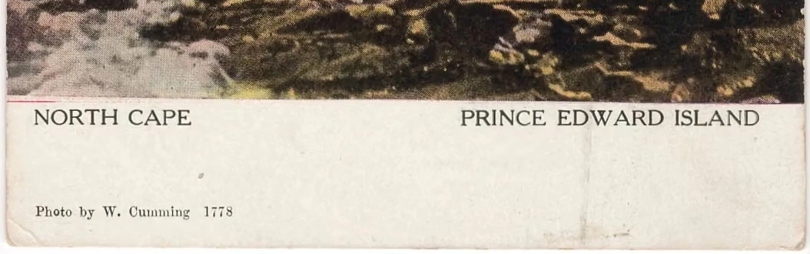
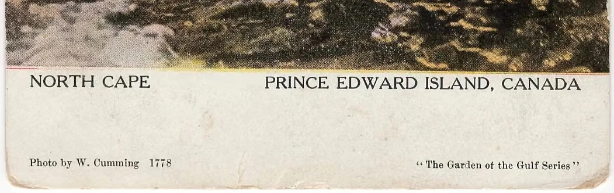
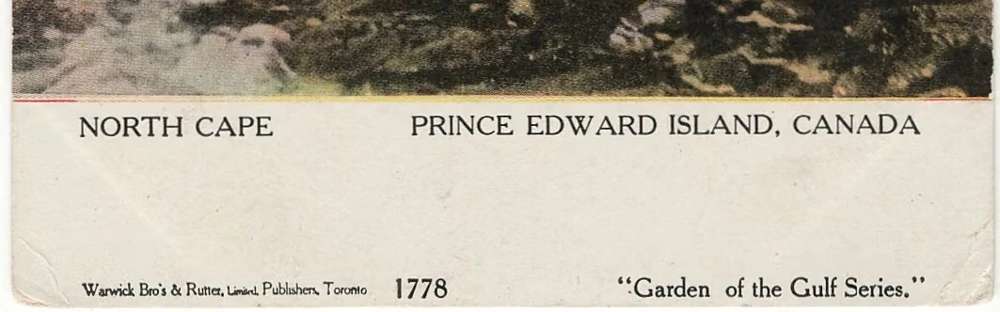
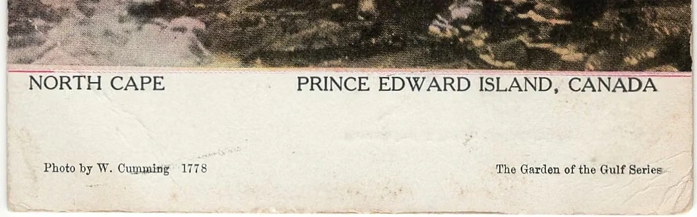
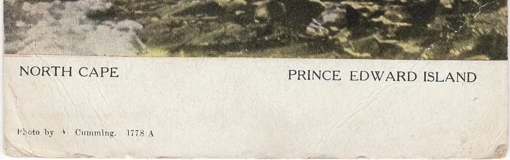
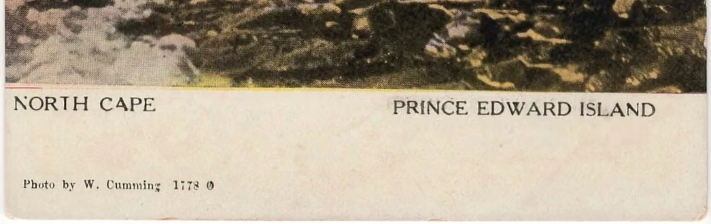
The first four margins all belong to cards numbered simply 1778. The A and O versions add letter differences, but much of the variety is already there before any letter enters the picture. Cumming’s missing credit on one front makes another point: a familiar photograph may outlast the printed acknowledgement of its maker.
1800: A Shady Nook
The figure seated beneath the trees in “A Shady Nook” remains wonderfully untroubled by all this activity in the margin. Here, the changes are almost a small exercise in page design. Cumming’s credit and the Garden of the Gulf name can occupy opposite corners, exchange places, or join the number in a single line.
There is a spelling variation too: one 1800 S credits “W. Cummings”, while other copies name “W. Cumming”. On another setting, Warwick’s publishing imprint takes the photographer’s place. The monochrome version shown alongside the colour card makes a still sparer composition: “Bridge” disappears from the location, and only the number remains at the foot.


The printed margins
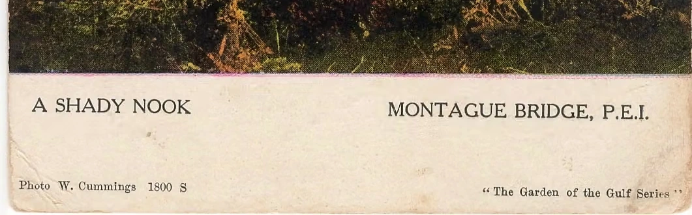
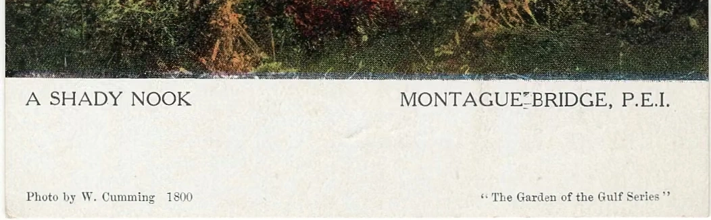
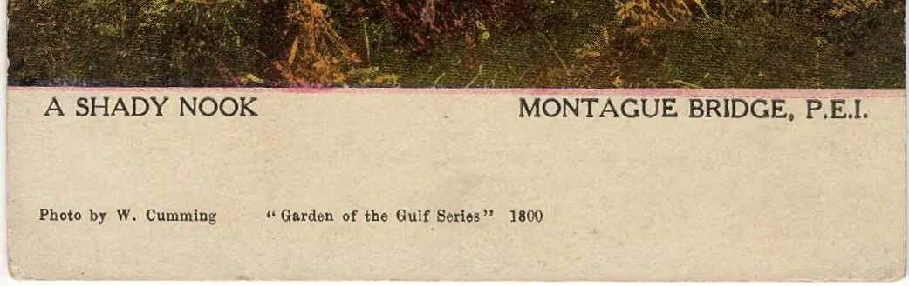
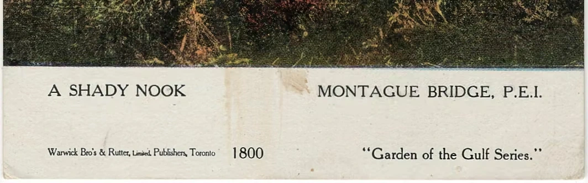
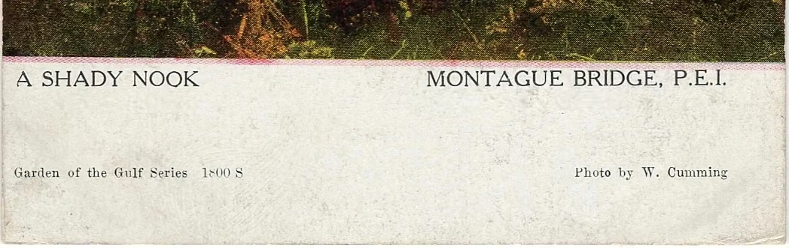
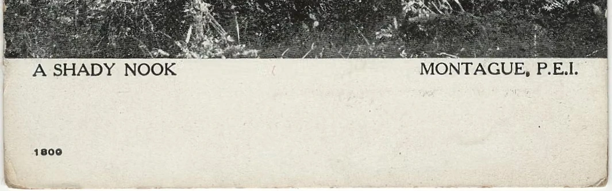
Colour catches the eye first, but the changed wording keeps this comparison interesting long after the two pictures have been recognized. A collector who checks only the scene could miss the rearranged credits, the extra s and the shortened place-name in a single pass.
1853: Gathering Shells
Warwick gives W. S. Louson’s shore scene a similar range of treatments. On one card his credit is small and upright at the lower left. On another, “W. S. Louson, Photo” receives a larger italic setting in the middle, balanced by the publisher’s imprint at one side and the Garden of the Gulf name at the other. A third moves the photographer to the lower right.
Even the letter refuses to stay put. The version with the prominent italic credit prints S1853; other copies print 1853 S. There is also an 1853 P, with the credit, series name and number gathered together. The grey card, paired here with its colour counterpart, supplies another combination by dropping the series line altogether.
![Gathering Shells [Kildare] Prince Edward Island — postcard 1060](../../images/cards/1060-front-1.avif)

The printed margins
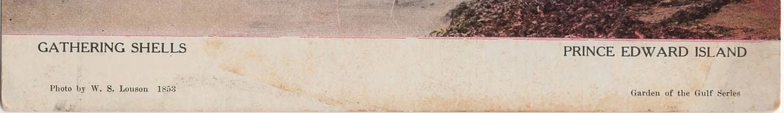
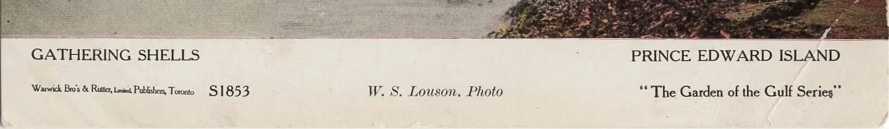
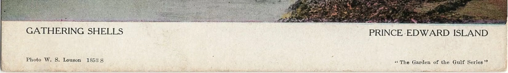
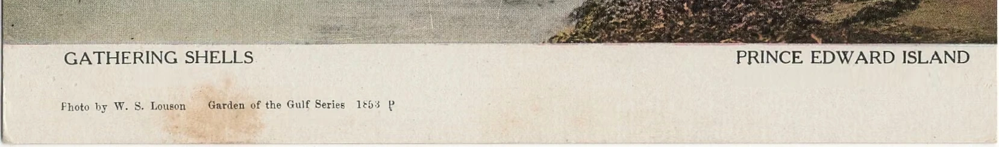
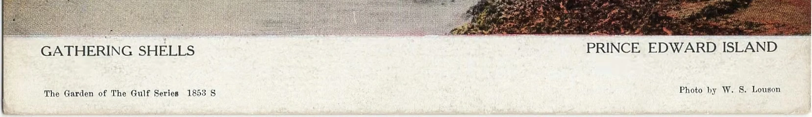
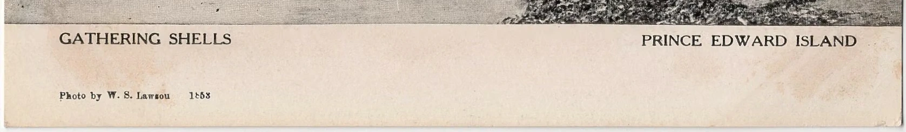
The familiar grey and grey-green issues have their own separate albums in the Warwick article. This grey “Gathering Shells” also belongs in a study of lettering: changing the colour treatment did not require keeping the rest of the front unchanged.
The next familiar card
A view number is a useful way into Warwick’s output. These cards show how much can live underneath it. Three copies of 2669 S can have three different captions; four copies of plain 1778 can disagree about Canada, Cumming and the series name. The changes extend from a single comma to the whole arrangement of the margin.
That is what makes a box of apparently familiar Warwick cards worth another look. The scene may already be in the album. The next version may still have something to say.
More Warwick: explore the Warwick Brothers & Rutter postcard albums and W. S. Louson’s photographs. Harry Holman’s Warwick catalogue on Straitpost also records title, series and photographer variations. All postcards illustrated here are in the collection.